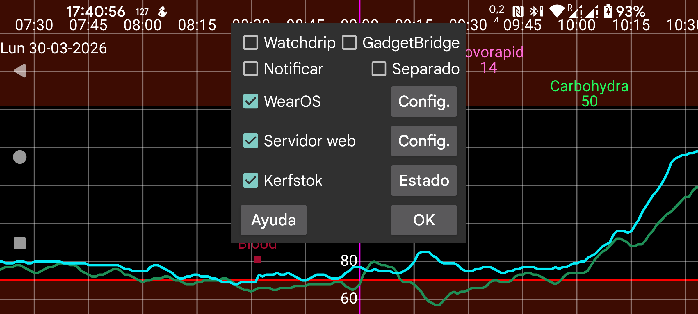

ar be de es fr it nl pl pt ru tr uk uz zh en
Actualmente, Juggluco tiene seis formas de llevar los valores de glucosa a tu reloj.
Cuando Notificar está activado, Android crea una notificación cada vez que llega un nuevo valor de glucosa. En algunos relojes, las notificaciones solo se envían cuando se crea una notificación nueva; en esos casos tienes que activar Separado. En esos mismos relojes también necesitas activar Separado para recibir en el reloj las notificaciones de alarma.
Al activar esta opción, Juggluco envía valores de glucosa a Watchdrip+. Watchdrip+ envía esferas que muestran los valores de glucosa a relojes MiBand y Amazfit.
GadgetBridge permite mostrar información meteorológica en relojes MiBand/Amazfit. Con la opción GadgetBridge activada, Juggluco envía los valores de glucosa a GadgetBridge fingiendo que son datos del tiempo. Esto tiene la ventaja de ser mucho más rápido que Watchdrip, pero muestra menos información.
Juggluco coloca el valor de glucosa y una flecha de tendencia en el campo de la localización meteorológica. Esa localización se muestra bajo Tiempo en el reloj. No he encontrado ninguna esfera que muestre esa localización.
Solo para mmol/L: la parte anterior al punto se coloca en la temperatura máxima y la parte posterior al punto en la mínima. Los valores en mg/dL son demasiado grandes para caber como temperaturas; por eso el último dígito se coloca en la temperatura mínima y los anteriores en la máxima. Así, 106 mg/dL se convierte en: temperatura máxima 10, temperatura mínima 6.
La dirección del cambio determina el icono meteorológico: nieve significa que la glucosa baja; lluvia, que sube. También se coloca en la temperatura actual. Un valor mayor que cero significa glucosa en subida; un valor menor que cero, glucosa en bajada.
Kerfstok es una app de reloj con la que puedes introducir cantidades, como dosis de insulina, pero también muestra el valor actual de glucosa.
En cuanto llega un nuevo valor de glucosa, Juggluco lo envía a Kerfstok. Por eso Kerfstok siempre muestra el valor de glucosa más reciente. Kerfstok también puede registrar todas las actividades compatibles con Garmin y mostrar velocidad y distancia. Consulta Reloj → Estado de Kerfstok → Ayuda y https://www.juggluco.nl/Kerfstok.
Las apps pueden recibir valores de glucosa desde uno de los broadcasts que envía Juggluco y mandarlos a un reloj. Por ejemplo, G-Watch (TizenOS o Wear OS) puede recibir valores de glucosa desde Glucodata Broadcast; consulta menú izquierdo → Ajustes → Intercambiar datos.
Juggluco incorpora un servidor web xDrip/Nightscout. Esto permite usar directamente con Juggluco apps de reloj de xDrip. xDrip solo muestra un nuevo valor de glucosa cada 5 minutos, mientras que Juggluco muestra un valor nuevo cada minuto. Juggluco también envía a las apps de reloj de xDrip el valor de glucosa más reciente.
Los valores solo se envían a los relojes si la app del reloj los solicita, así que la antigüedad del valor mostrado depende de cuándo la app lo pida. Por ejemplo, las esferas y los campos de datos de Garmin suelen pedir un valor solo cada 5 minutos. A través de xDrip esto llevaba a menudo a mostrar valores con 10 minutos de antigüedad. Cuando se conectan directamente a Juggluco, esas esferas suelen mostrar valores de hasta 6 minutos de antigüedad.
En Garmin, si no puedes usar Kerfstok, tienes las siguientes opciones para recibir regularmente un valor reciente de glucosa. Un widget xDrip (https://apps.garmin.com/en-US/apps/73115e04-dc9f-4765-ad88-e7ae283ce995) también puede usarse durante el registro de una actividad. Si tienes una mano libre, puedes cambiar a ese widget mientras registras una actividad con una app deportiva estándar de Garmin. También existe una app deportiva xDrip que actualiza regularmente el valor de glucosa: https://apps.garmin.com/en-US/apps/aaf6533b-bca1-4365-9131-9f882f6f148c.
Puedes intentar iniciar la actividad en un momento en el que la petición del valor de glucosa llegue justo después de que esté disponible. Los campos de datos y las esferas serían la solución ideal, pero las restricciones impuestas por Garmin hacen que sirvan de poco.
Antes se podía usar el servidor web de Juggluco con una esfera para Fitbit: https://glancewatchface.com. Desde mediados de 2024, Fitbit ya no permite apps de terceros en sus relojes: https://www.techradar.com/health-fitness/fitbit-watches-in-the-eu-will-lose-third-party-apps-and-watch-faces-heres-why.
La regulación de la UE parece haber provocado esa decisión. Tal vez el posible requisito de permitir tiendas de apps alternativas en Wear OS haya influido. Los rastreadores simples, sin apps de terceros, también están permitidos y quizá Fitbit pase a ser eso.
Algunas personas afirman que, tras cambiar la ubicación a EE. UU. y usando una VPN, pueden volver a instalar apps de terceros.
Para más información sobre la interfaz del servidor web, consulta https://www.juggluco.nl/Juggluco/webserver.html.
Existe una versión de Juggluco adaptada a Wear OS. La pantalla está ajustada al tamaño más pequeño y se añade una esfera. La esfera puede instalarse como una esfera habitual de Wear OS y muestra, además de la hora, el valor actual de glucosa recibido por Bluetooth.